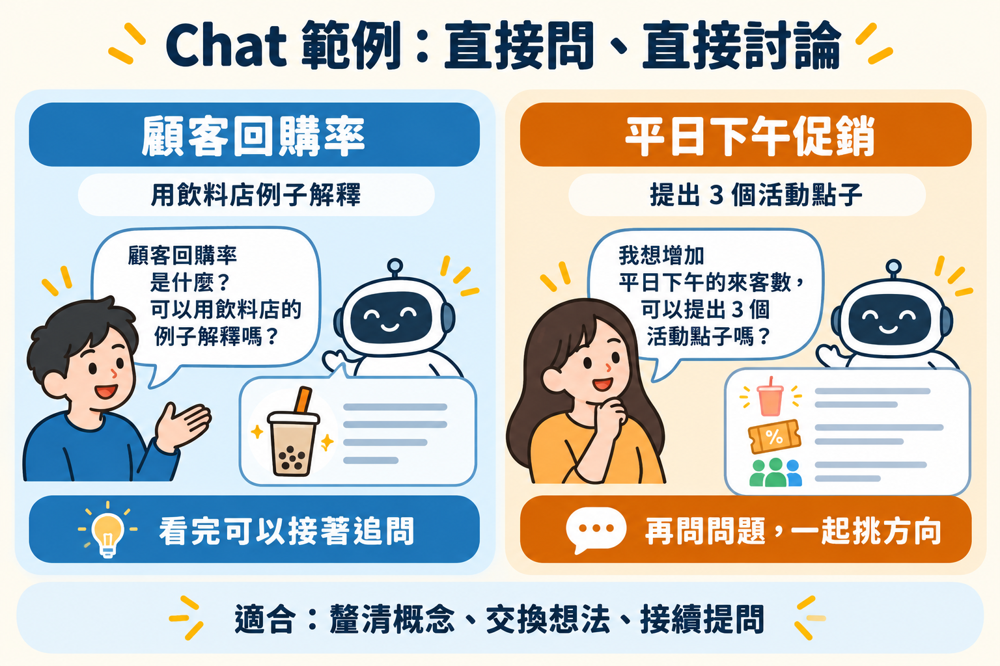
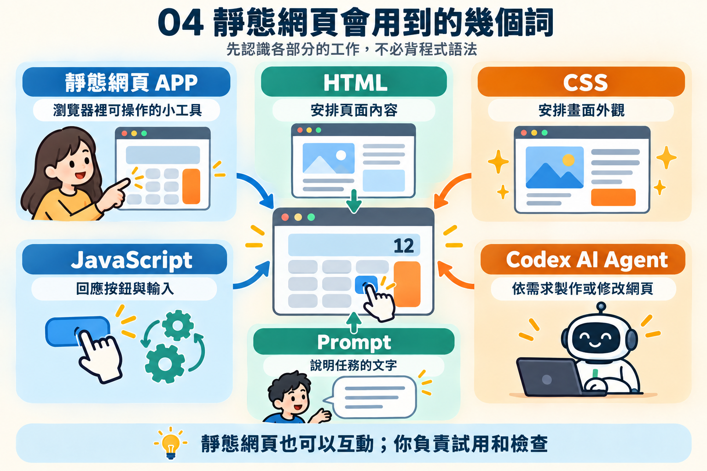

AI 與 AI Agent 入門
從 AI 到 AI Agent 應用
先認識 AI 與 Chat、Work、Codex 三種工作角色，了解它們各自適合處理的任務，再學習如何清楚交辦、操作並檢查 AI Agent 製作的網頁工具。
01先認識 AI，再認識 ChatGPT 的三種角色
AI 是能依照指示理解和產生文字、圖片或其他內容的技術。ChatGPT 是使用 AI 的服務；其中的 Chat、Work 和 Codex，是三種適合不同工作的使用方式。可以把它想成同一位助理有三種工作模式：有時回答問題，有時接手整理任務，有時協助製作或修改數位工具。
三種角色都能理解日常語言，也可能使用檔案或工具；真正的差別在於你交辦的是哪一種工作、AI 如何進行工作，以及最後要交付什麼。尤其 Chat 和 Work 的差異不只是有沒有上傳檔案：兩者都可能使用檔案，應依任務目的和成果來選擇。
| 比較重點 | Chat | ChatGPT Work | Codex |
|---|---|---|---|
| 主要角色 | 對話夥伴：解釋、回答、一起想 | 任務助理：依資料完成一件較完整的工作 | 數位工具製作夥伴：製作或修改網站與程式專案 |
| 工作方式 | 你提出問題，根據回答追問或調整方向 | 你交代目標、資料和成果格式；它整理多個步驟並產生成品 | 你說明工具要解決的問題和操作方式；它在專案中建立或修改作品 |
| 常見成果 | 解釋、建議、點子、短文草稿 | 整理好的報告、摘要、試算表或簡報 | 可以操作的網頁、小工具或程式功能 |
| 學生要做什麼 | 判斷回答是否清楚、有用，必要時繼續追問 | 說明資料和交付要求，檢查整理是否忠於資料 | 說明功能與規則，實際操作作品並檢查結果；不必先會讀程式碼 |
Chat：問問題、聽解釋、來回討論
把 Chat 想成一位隨時可以交談的學習或工作夥伴。你可以問「這個名詞是什麼意思？」、「有什麼做法？」或「請把這段話說簡單一點」，再根據回答接著追問。它適合快速釐清想法；回答通常直接出現在對話中，由你決定是否採用或繼續修改。
商管例子：請它用飲料店說明顧客回購率，接著追問「如果我只有一週的資料，能不能算？」它會跟著你的問題繼續解釋。這種問答不需要先準備完整檔案，也不必要求它交付一份正式報告。
ChatGPT Work：交辦多步驟工作，取得可繼續使用的成果
把 Work 想成可以接手一件較完整任務的助理。你要說明要完成什麼、使用哪些資料、成果要長什麼樣子；它可以整理資料、依要求完成不同步驟，再產出可檢查和繼續使用的成果，例如摘要、報告或試算表。過程中你仍可補充要求、回答它的問題，再檢查最後的成果。
商管例子：把一份匿名顧客意見資料交給 Work，請它分類意見、計算各類筆數、整理主要發現，並產出摘要表。上傳檔案不是 Work 與 Chat 的唯一差異：Chat 也能回答檔案相關問題；選 Work 的關鍵是希望它完成一整組整理步驟並交付成果。符合權限與方案時，桌面版 Work 也可在你授權後使用本機檔案或資料夾；雲端或網頁工作流程則可上傳檔案或下載成果。
Codex：協助製作或修改網站與數位工具
把 Codex 想成負責數位作品的製作夥伴。它能在你開啟的專案中查看相關檔案、建立或修改網頁，並依指示檢查功能。你不必親自寫程式，也不必先看懂它產生的程式碼；但要能說清楚使用者要做什麼、輸入什麼、畫面應顯示什麼，以及怎樣才算正確，最後還要實際操作作品驗收。
商管例子：請它製作飲料折扣試算網頁，讓店員輸入原價和折扣後看到售價。Codex 會處理網頁背後的程式；你則檢查輸入方式、折扣計算和畫面說明是否符合店員的需求。
Chat 陪你對話和釐清問題；Work 依資料完成一項完整任務並交付成果；Codex 協助製作或修改網站與程式工具。不確定怎麼選時，先看你要的是「回答」、「整理好的成果」，還是「可操作的工具」。
直接複製試用
下面的文字可以直接貼到對應的工具。先看它們要你提供什麼、最後要得到什麼，便能看出不同角色的用途。
Chat：直接在對話中問一個問題、聽解釋或交換想法，也可以接著追問。
Work：先提供一份資料（可以貼在提示裡或附上檔案），再請它完成較完整的整理工作，交付可保存或繼續使用的成果。下方 Work 範例會用到可下載的練習檔；先下載並上傳檔案，再貼上提示。
Chat 範例：直接問、直接討論

請用一家飲料店的例子，簡單解釋「顧客回購率」是什麼。先不要談公式或專業術語；說完後請問我哪個地方想再了解。我想替飲料店想一個吸引學生平日下午來店的活動。請先提出 3 個不同方向，每個用一兩句說明，再問我幾個問題，幫我挑出適合的方向。ChatGPT Work 範例：先給資料，再交付整理成果
我已上傳「customer_feedback.csv」。請閱讀檔案中的匿名顧客意見，完成一份顧客意見整理：把意見分類、計算各類則數、每類選一則代表意見，並整理主要發現。請把分類與統計整理成一份可下載的試算表，另外附上簡短摘要。只根據檔案內容整理，不要推測；不確定的地方請註明。我已上傳「meeting_notes.txt」。請閱讀會議紀錄，整理成一份可下載的待辦清單，包含工作項目、負責人、期限和目前狀態。請把缺少的資料標示「待確認」，再用幾句話列出還需要小組決定的事情。不要自行補上檔案沒有提供的資訊。Codex 範例
先下載範例檔，並放進 Codex 正在處理的專案資料夾，再貼上提示。你不必打開或修改檔案內容。
我已把「drink_prices.csv」放在目前的專案資料夾。請讀取這份檔案，製作一個可以用瀏覽器開啟的「飲料折扣試算」靜態網頁，列出商品、原價、折扣和折扣後價格。使用者也可以輸入原價和折扣百分比試算。這是課堂示範工具，不要連接真實店家系統，也不要新增需要安裝的工具。完成後請用一般用語告訴我新增或修改了哪些檔案，以及我可以怎麼開啟和試用。我不需要閱讀程式碼。想問問題或一起討論，用 Chat；要它處理資料並交付一份成品，用 Work；要建立或修改網頁小工具與程式專案，用 Codex。
沒有程式背景也能使用 Codex
使用 Codex 不代表你必須先會寫程式。你要先說明商業情境、誰會使用、需要哪些輸入和結果，以及怎樣才算完成；Codex 協助把需求做成網頁工具。你則用熟悉的工作情境試用，確認數字和規則合理，再用日常語言指出要修改的地方。
三種角色都需要清楚的脈絡與檢查
無論選哪一種角色，都要交代任務背景並檢查結果。提供檔案或資料時，說明它們是什麼、要如何使用；資料不足時，請 AI 說明缺少什麼，不要自行補造。若成果不符合需要，描述具體落差，再請它調整。工作角色越能動手處理資料或檔案，你越要清楚設定工作範圍並查看它完成了什麼。
練習時優先使用示範資料或去識別化資料。請 AI 整理出來的數字、分類和建議仍要對照來源確認；不要把未核實的分析直接當成營運或管理決策。
02把想法寫成清楚的需求
Prompt 就是你交給 AI Agent 的任務說明。描述得越清楚，越容易得到能試用的成果。開始前，先交代四件事：
- ① 目標要解決什麼問題？例如「協助店員判斷哪些商品需要補貨」。
- ② 使用情境誰會在什麼時候使用？例如「小型門市店員，每天打烊前查看」。
- ③ 預期成果需要哪些資料、畫面或操作？例如「輸入商品名稱、現有庫存和安全庫存，顯示補貨提醒」。
- ④ 完成條件與界線怎樣算正確？哪些事情不應假設？例如「低於安全庫存才提醒；只做示範頁，不連接真實庫存系統」。
太簡略：「做一個補貨工具。」
更清楚：「請做一個給小型門市店員使用的補貨提醒網頁。使用者可輸入商品名稱、現有庫存與安全庫存；當現有庫存低於安全庫存時，清楚顯示補貨提醒。請提供幾筆示範資料，並標明這只是示範工具，不會連接真實庫存系統。」
操作後要親自檢查
AI 做出第一版後，先照預期方式操作，再用具體例子驗收。試試庫存低於、等於和高於安全庫存的情況，確認提醒邏輯；也檢查欄位名稱、計算結果與說明是否清楚。若發現問題，指出「哪個操作、出現什麼結果、你期待什麼結果」，再請 AI 修正並重新檢查。
AI 可以協助製作和整理，但你要確認資料來源、計算方式與結果是否符合情境。涉及商業決策時，先用可信資料驗證，不要只因畫面看起來合理就直接採用。
03每個練習都走同樣的四個階段
不管你這一班做的是哪個題目，流程都一樣。換成別的題目也一樣適用：
- ① 題目敘述你的專業領域裡的情況與想解決的麻煩
- ② 建議 Prompt把需求寫成交辦文字
- ③ 預期成果做完應該長什麼樣子
- ④ 完成檢核用具體數字驗收
讀懂情境 → 用自己的話描述 → 操作成果 → 依條件檢查。四個階段走完一次，比兩題都做一半更有收穫。
04認識靜態網頁的幾個詞
準備好用 AI Agent 製作靜態網頁後，再認識下面這些詞。現在不必背程式語法；先知道每個部分大致負責什麼即可。

- 靜態網頁 APP
- 你的完成品。用瀏覽器直接開啟的小工具，可以顯示資料、計算價格或提醒補貨；不連接店家的正式系統。這裡的「靜態」不代表不能互動。
- HTML
- 網頁內容。決定頁面上有哪些東西，例如標題、商品資料、輸入欄位和按鈕。可以把它想成頁面的骨架。
- CSS
- 畫面外觀。安排顏色、字體、大小和位置，讓重要資訊容易看見、畫面容易使用。
- JavaScript
- 操作後的反應。讓頁面回應使用者的操作，例如按下按鈕後計算折扣價，或修改數量後更新庫存提醒。
- Prompt
- 需求說明。你交給 Codex 的文字：說明誰會用、要完成什麼、畫面要顯示什麼，以及怎樣才算做好。
- Codex AI Agent
- 協作夥伴。讀懂你的需求後，協助建立或修改網頁。你負責試用成果、確認是否符合需求，再說明要改進的地方。
記住這個順序就好：先說清楚想做的工具，再請 Codex 協助製作，接著親自操作和檢查。你不必先學會 HTML、CSS 或 JavaScript。